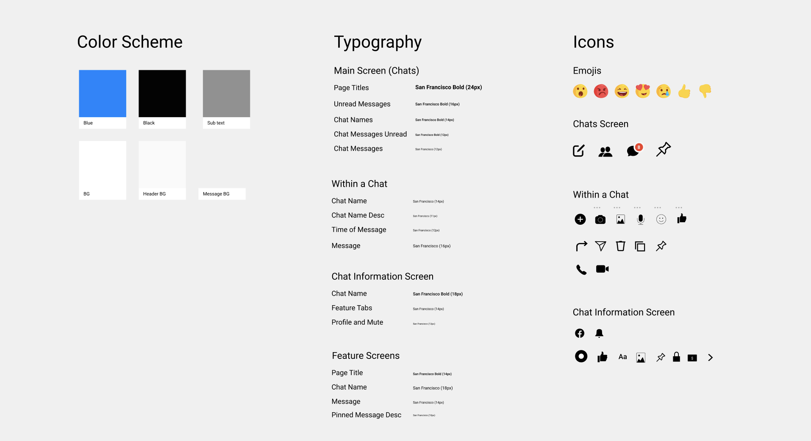

Case Study — 2020
Pin Items in Messenger

Messenger is a messaging app and platform. At its core, Messenger helps you instantly reach the people you’re close to without a data plan, for free. My goal was to improve the navigation of certain chats and messages within Facebook with pins.
Role
Graphic DesignerUser Researcher
UX Designer
Team
Individual
Tools
Adobe DrawAdobe Illustrator
Adobe XD
Timeline
3 weeks, Feb to Mar 2020

Problem
Research

I research other competitors and how they resolve the issue of navigating through the infinite amount of messages.
Affinity map from user interviews and app reviews.
02 — The process to navigate a message or chat is a long process that can be simplified.
03 — Messenger contains many features that doesn't focus on the optimizing the user experience - accessing messages efficiently and having the app related to only messages, not having a page dedicated to the news (which is more of a Facebook app feature rather than a Messenger one).
04 — There is a need from users to sort chats and pin specific messages for user accessibility.
Ideation

SWOT Analysis (Left) and Feasability / Impact Chart (Right)
Solution
Allow users to pin and chats
and messages.
and messages.
When solving the original problem of difficult navigation through the clutter of Messenger, I realized that messenger apps will always be cluttered with a list of chats. Looking closely at my problem, I primarily wanted to focus on how to easily funnel the process of navigating through a chat list or within a chat. A solution to resolve the strenuous process of navigating through a chat list to find a specific chat or going through thousands of messages to find a specific message was to enable users to pin chats or messages.
Going back through the interviews and discussing with peers, I found that Slack was a prime example of providing a product that allows users to easily navigate through their own chats. As an avid user of Messenger as well as an avid user of Slack, I was able to see the successful use of a 'pin' product.
For Messenger, I, along with my peers, found that memorizing important dates, places, links can be extremely difficult. We often resort to copy and paste the message in our endless doc of notes or a notepad. With an addition of the Messenger 'pin', this painstaking process of sliding through endless chats and messages would be reduced.
Going back through the interviews and discussing with peers, I found that Slack was a prime example of providing a product that allows users to easily navigate through their own chats. As an avid user of Messenger as well as an avid user of Slack, I was able to see the successful use of a 'pin' product.
For Messenger, I, along with my peers, found that memorizing important dates, places, links can be extremely difficult. We often resort to copy and paste the message in our endless doc of notes or a notepad. With an addition of the Messenger 'pin', this painstaking process of sliding through endless chats and messages would be reduced.

Sketches done on Adobe Draw.
When ideating and sketching possible user flows, I took in mind the content requirements needed to craft an efficient and feasible feature.
01 — Reduce the current clutter on Facebook Messenger by removing or relocating features that are rarely used by users to make space for pinned chats.
02 — Have the pin feature be visually accessible on the current screen, without adding more clutter to the Messenger Screen.
01 — Reduce the current clutter on Facebook Messenger by removing or relocating features that are rarely used by users to make space for pinned chats.
02 — Have the pin feature be visually accessible on the current screen, without adding more clutter to the Messenger Screen.
Interact with the wireframe here.
After testing the prototype with potential users, I made some new inputs and changes to the final prototype.
UI Kit

FINAL
Video of the final prototype, made with Figma.
Outcome
This was a really exciting and fun project for me to work on as it provides real value, involved a ton of research, and close attention to interactions. This was my first individual Digital Design Project and I learned some important takeaways from this project related to working on projects, in general:
When finding users to interview or test on, always have an uncommon user.
Process is not linear.
Always ask for feedback and reiterate.
Next steps
Implementing other features to access messages efficiently —
This is one solution to solve Messenger's long navigation process and clutter of space. Exploring other alternative solutions and conducting user testings favoring different solutions would help identify the most successful solution.Further refining the 'Pins' screen —
The current 'Messages' tab within the 'Pins' screen is not connected to the slide down view of pinned messages. Connecting or having the same screen for pinned messages would bring greater accessiblity and navigation.